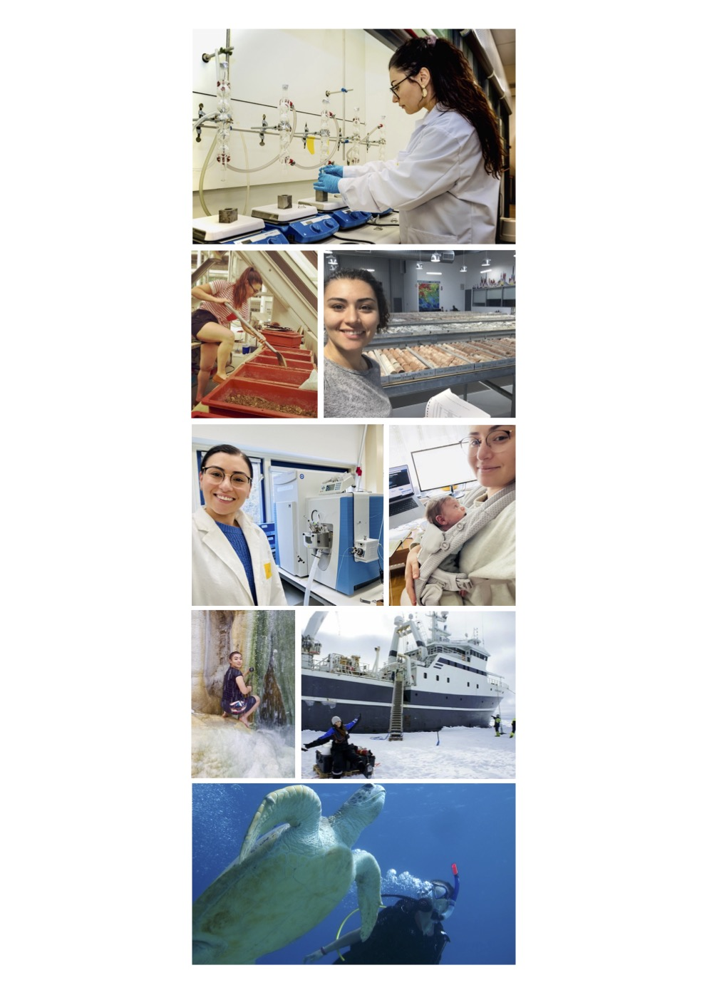
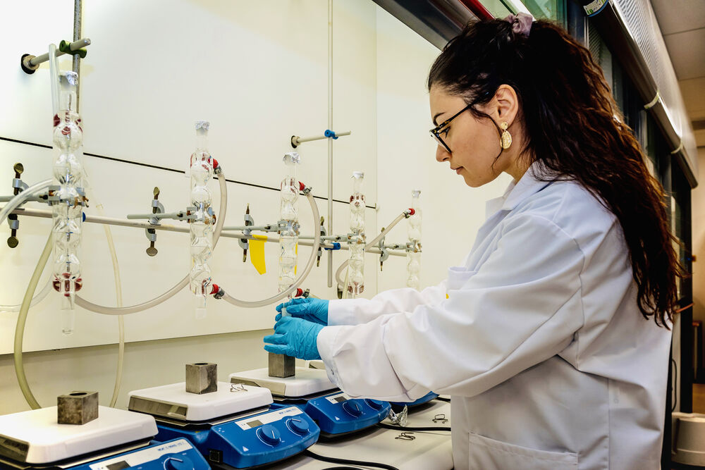
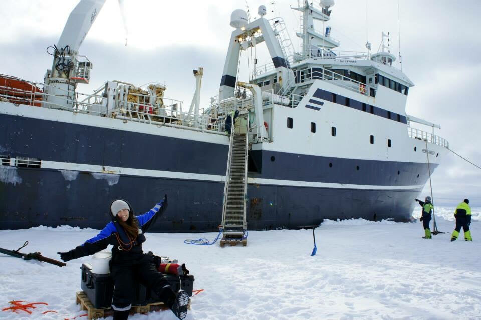
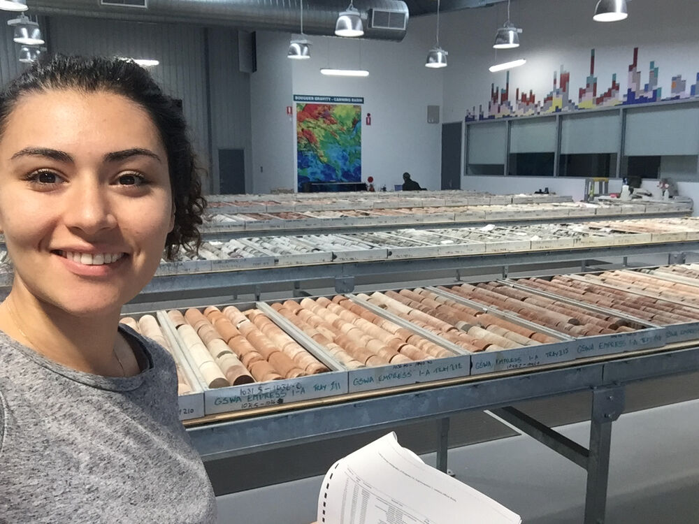

About Me
Hi, I’m Merve Tomečková Öztoprak, an analytical scientist passionate about uncovering life’s hidden chemical stories.
I am completing my PhD at NIOZ Royal Netherlands Institute for Sea Research and Utrecht University, where I develop LC- and GC-Orbitrap mass spectrometry workflows to study the isotopic fingerprints of lipids. My work bridges analytical chemistry, data science and environmental forensics, and asks how chemistry can reveal the origins, processes and impacts of life in Earth’s systems.
With a cross disciplinary background in ecosystem sciences, geobiology and evolutionary biology, I discovered early on the power of analytical chemistry to expose life’s invisible traces. While studying at the Universities of Göttingen, Uppsala and Munich, I became fascinated by how isotope and molecular tools uncover some of the oldest biosignatures on Earth, a perspective that still shapes my research today.
That curiosity led me to research at Caltech, the Australian National University and the German Aerospace Center, to a traineeship at Bayer CropScience, and to fieldwork and study in Svalbard and Hong Kong. Along the way I gained expertise in LC-MS, GC-MS and IRMS, statistical modelling in R and Python, microbiology and ecology, and learned the value of working across cultures, disciplines and perspectives. I thrive in collaborative, international settings and want to turn innovative analytical ideas into tools that make a difference in environmental science, health and forensic applications.
Outside the lab, I enjoy hiking, painting and travelling to spend time with family and friends across the globe. As a new mother, I love fostering my daughter’s curiosity and seeing the world through her eyes, which keeps reminding me of the wonder and creativity that also drive my work as a scientist.
I believe that as academics we have a responsibility not only to advance knowledge, but also to use our training in critical thinking and our experience with diverse stakeholders to improve the communities around us. To that end I co-founded a diversity, equity and inclusion group at my institute, helped establish its PhD council, mentor students through workshops, lectures and supervision, and co-chaired the 2026 Gordon Research Seminar on Organic Geochemistry.
I am convinced we can overcome today’s greatest challenges, from the climate crisis to rising political tensions and humanitarian needs, if we resist nihilism and empower the next generation of academics, leaders and citizens. That requires rigorous scientific methods and fact based approaches, so that solutions remain grounded in evidence and guided by shared responsibility, respect and justice.
At a glance



